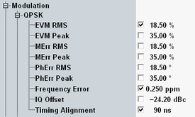

A poor modulation accuracy of the eNodeB transmitter increases the transmission errors in the downlink channel of the LTE network and decreases the system capacity. The error vector magnitude (EVM) is the critical quantity to assess the modulation accuracy of an eNodeB.
3GPP defines requirements for the frequency error, the EVM and the time alignment.
In the configuration dialog, you can set limits for these measurement results, depending on the modulation scheme. You can also set limits for other modulation results.

The following table provides an overview of the related limits defined by 3GPP. The default values correspond to the requirements for a home BS.
Characteristics | Refer to 3GPP TS 36.141 V10.6.0, section... | Signal property | Test requirement |
|---|---|---|---|
EVM (RMS) | 6.5.2 Error Vector Magnitude | QPSK | < 18.5 % |
16-QAM | < 13.5 % | ||
64-QAM | < 9 % | ||
Frequency error | 6.5.1 Frequency Error | home BS | < 0.25 ppm |
local area BS | < 0.1 ppm | ||
wide area BS | < 0.05 ppm | ||
Time alignment | 6.5.3 Time Alignment Error | MIMO | < 90 ns |